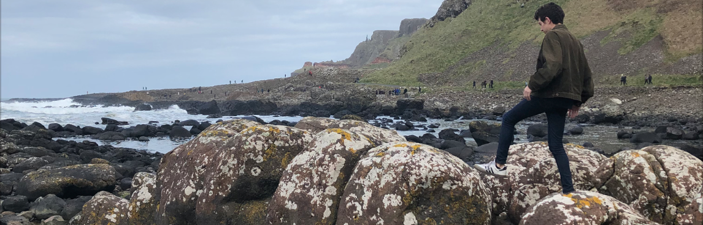

nathan blair
, uc berkeley eecs

AI Created Plunderphonic Music |
github
Puddles
Your browser does not support the audio element.
Snakes
Your browser does not support the audio element.
Future Muzak
Your browser does not support the audio element.
Electronic Track (ft. Jordan Leffler [sax], Grant Blair [guitar]):
3436 Lightyears from Home |
score
Your browser does not support the audio element.
A Rainy Day in Berkeley [Field recordings + solo vibraphone]
Your browser does not support the audio element.